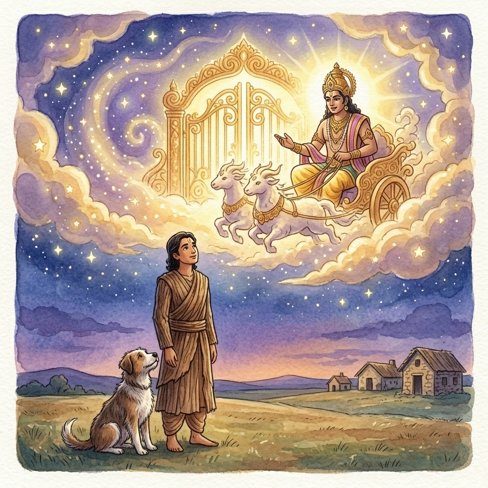

This story forms the end of the great Hindu epic Mahabharata. The five Pandava brothers, who are the heroes of the epic, set out to reach heaven, along with their wife Draupadi. Entering heaven in one’s body (rather than after death and cremation) is reserved only for the most exceptional beings. One by one, all but one of the humans die on the journey, leaving only Yudhisthira, the oldest brother, followed by a loyal dog. When he is told he cannot take the dog into heaven, Yudhisthira says he won’t go.
Realizing that his life was nearing its end, King Yudhisthira decided to leave his kingdom in the hands of his heir and become a renouncer. His four brothers – mighty Bheema, the archer Arjuna, and the twins Sahadeva and Nakula – decided to join him, as did their wife Draupadi. They gave up all their wealth and put on clothes made of bark. Then those five brothers – along with Draupadi as a sixth and a stray dog who followed them as a seventh – left their capital city and began their long journey.
The first to fall along the way was Draupadi.
“Why did she die first, Yudhisthira?” asked Bheema. “Was she not virtuous, possessing a good heart?”
Yudhisthira replied without looking back. “That is true, but she was more attached to Arjuna. That was her failing.”
The next to falter and collapse was Sahadeva.
“What was his failing, O Yudhisthira?” cried Bheema.
Yudhisthira continued walking without looking back, and replied: “Pride in his intelligence was his failing.”
Next fell Nakula.
“What wrong did he do, O Yudhisthira?” wailed Bheema.
Yudhisthira spoke, without looking back: “He admired his own good looks. That was his failing.”
Arjuna collapsed soon after.
“What wrong did Arjuna do, O Yudhisthira?” cried Bheema, overcome with grief.
Yudhisthira was unmoved and kept walking: “He was brilliant but conceited and overconfident. That was his failing.”
Bheema fell thereafter, unable to bear the sorrow of seeing his brothers die.
Yudhisthira spoke while walking alone: “Bheema was boastful about his strength and ate in excess. That was his failing.”
And now only Yudhisthira and the dog were left, continuing the journey together.
Soon Indra, king of the gods, appeared on his chariot, and invited Yudhisthira to join him. Yudhisthira gazed at the bodies of his brothers and said, “King of the gods, grant that my brothers, and Queen Draupadi, may join me on the journey to heaven. I do not wish to go without them.”
Indra replied, “Do not be sad! Your brothers and sons and Draupadi are all in heaven already. They have gone to heaven before you after casting off their bodies. But you shall go to heaven in your body.”
Then Yudhisthira said, “This dog has been loyal and devoted to me. Let him come with me.”
Indra replied, “King, today you have attained immortality like myself, and all the joys of heaven. Abandon the dog. There is no harm in this.”
But Yudhisthira responded, “Great king of the gods, it is difficult for a noble person to do an ignoble deed. I do not wish for glory if it means abandoning one who is devoted to me.”
Indra said, “There is no place for dog-owners in heaven. Dogs disrupt the sacrifices and offerings and make them impure. You abandoned your wife and brothers on the journey. Now abandon the dog!”
Yudhisthira replied, “I left my wife and brothers because they were dead and I could be no further use to them, but this dog is alive and has taken refuge with me. I will not abandon one who is devoted to me. That would be a sin equal to killing a woman, robbing a brahmin, or harming a friend.”
Hearing these words, Indra was struck, and said: “King, you are the greatest of kings, with intelligence, morality and compassion. You have given up a chariot to heaven for the sake of a loyal dog. Because of this you have gained the highest heaven.”
And so, praised by all the gods, Yudhisthira mounted Indra’s chariot and went to heaven, along with his faithful dog, who became the brightest star in the sky, also known as Sirius.
